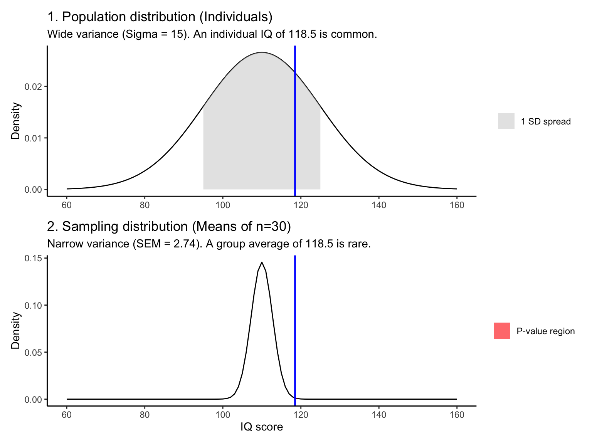

Untitled
The logic of hypothesis testing
Hypothesis testing is effectively a signal-to-noise problem. We observe a difference (signal), but we must determine if that difference is meaningful or merely a result of random variation (noise).
The Z-test is the foundational model for this process. While rarely used in practice (because it requires knowing the population variance), it is pretty good to understand how we map raw data onto probability distributions.
The scenario
Imagine we measure the IQ of 30 students who competed in a Math Olympiad.
Observed sample mean (\(\bar{x}\)): 118.5
Sample size (\(n\)): 30
We assume the parameters for the general human population are known facts:
Population mean (\(\mu\)): 110
Population SD (\(\sigma\)): 15
Research question: Is there sufficient evidence to conclude that these students differ significantly from the general population?
Assumptions
Continuous data: The dependent variable is continuous.
Independence: Observations are independent.
Normality: The sampling distribution is normal (satisfied by CLT as \(n=30\)).
Known variance: The population \(\sigma\) is known.
1. Visualizing the mechanism
To test the hypothesis, we must compare our sample against the “Null distribution.”
Crucially, we do not test against the distribution of individuals (Population). We test against the distribution of means (Sampling Distribution). The Z-test relies on the fact that the Sampling Distribution is much narrower than the Population, making it sensitive to deviations.
2. The calculation
The Z-test quantifies the visual difference above. It calculates the distance between the observed mean and the expected mean in units of Standard Error.
Step A: Calculate standard error (SEM)
The spread of the sampling distribution (Plot 2) is determined by the population \(\sigma\) and sample size \(n\).
$$SEM = \frac{\sigma}{\sqrt{n}} = \frac{15}{\sqrt{30}} \approx 2.74$$
Step B: Calculate Z-score
We standardize the difference. This maps our specific experiment (IQ) onto the universal Standard normal distribution.
$$Z = \frac{\bar{x} - \mu}{SEM} = \frac{118.5 - 110}{2.74} \approx 3.10$$